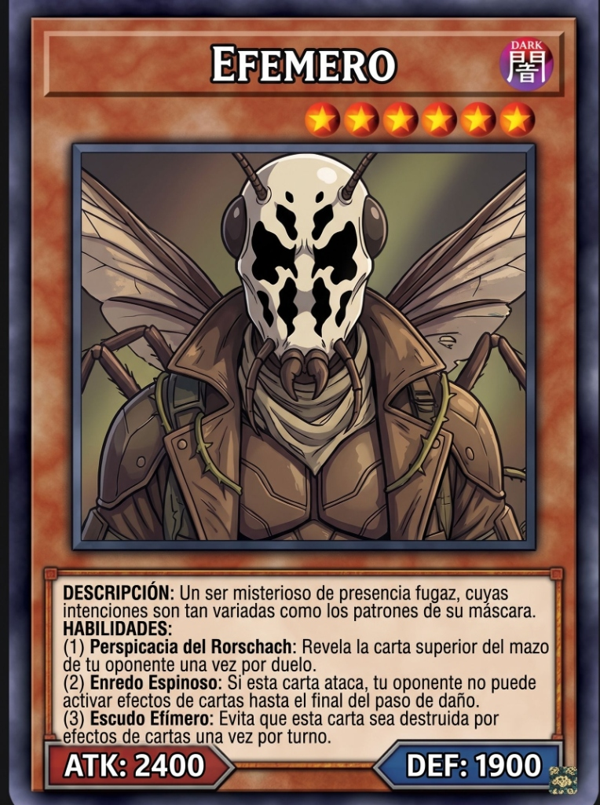

"No viviré para morir"
Bajo el fango denso del humedal de Bogotá florece Hemera: una utopía biotecnológica subterránea donde nadie envejece ni pasa hambre, pero todos son sacrificados a las 24 horas de alcanzar la adultez. EFE, una ninfa disidente encadenada al lodo, descubrirá que la muerte no es biológica: es un exterminio inducido por el tiránico Consejo de Libélulas.
El fundamento biológico que inspiró el universo: los efemerópteros pasan casi toda su existencia como ninfas en el agua, pero al convertirse en adultos su vida se reduce a 24 horas para cortejar y morir.
EFE escoge no seguir las dinámicas de su sociedad y rechaza su metamorfosis, pues la plenitud de su especie significa su propia ejecución.
El texto canónico fundacional: la deformidad de EFE, la caída al cañaveral abisal, el zarpazo del Sirirí biomecánico, el encuentro con el viejo Efímero y la revelación del biochip endócrino.
Adaptación visual completa en formato cómic (EFE.pdf). Tinta negra y texturas sepia inspiradas en cómic underground sobre la rebelión de EFE bajo el pantano de Bogotá.
Transmisión interceptada de la reunión secreta entre el fundador mutilado Efímero y la ninfa disidente EFE en las ruinas sumergidas. Descubre el diálogo original donde se desvela el engaño del biochip de 24 horas y la entrega del transmisor electromagnético.

Carta de personaje oficial interactiva del universo Hemera (Funciona con AR). Apunta la cámara al marcador de EFEMERO para activar la proyección en Realidad Aumentada.
ℹ️ Aviso (AR): Debes escanear la ficha / carta de personaje que aparece en pantalla (la cual estaría impresa en la experiencia física). El enlace se abrirá en una ventana nueva y podrás regresar cuando lo desees.
Encarna a EFE ("El Manchado") en las entrañas del humedal industrial. Usa tu látigo mecano-espinoso, evade a las Ninfas de Libélula y recolecta los biochips plateados en 4 sectores más el Epílogo del Gran Sol.
ℹ️ Aviso: El videojuego se abrirá en una ventana nueva. Esta web permanecerá abierta para que puedas regresar cuando lo desees.
🎮 Jugar Aether's Stain ↗"No viviré para morir"
Has recorrido los estratos sumergidos de Hemera: desde la Génesis biológica del orden Ephemeroptera, el Relato fundacional, los trazos en sepia del Cómic y las Frecuencias del Pantano, hasta la Realidad Aumentada y la rebelión final en el videojuego Aether's Stain.
En la cumbre de la Torre Zenith, bajo el holograma del viejo Efímero, la disidencia de EFE permanece como símbolo de resistencia frente al control biopolítico: elegir la conciencia por encima de una plenitud efímera programada.